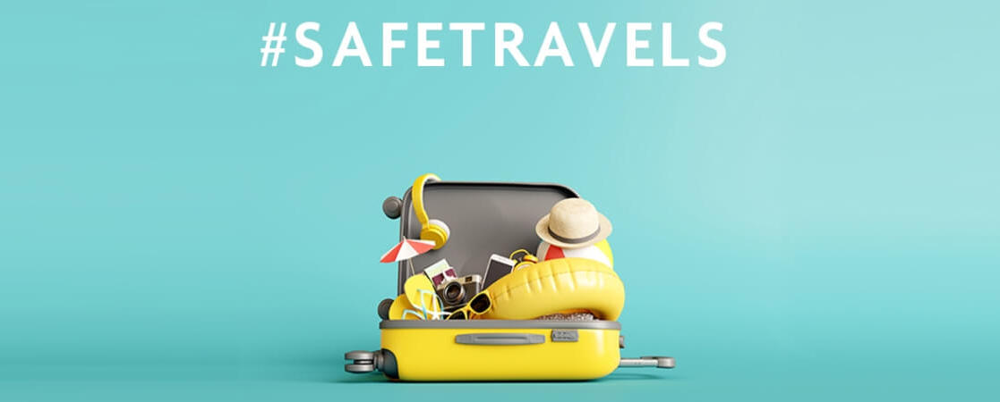

General tips
- Share your location with a friend or family member
- Take your bag with you to the bathroom every time, even on buses and trains
- Always go in a train car that has other people in it
- Avoid sleeping on trains
- Don’t be afraid to say no
Travelling tips
- Crowdsource your research
- For Airbnb or couch surfing, only go to places with lots of good reviews and make sure to check the reviewers profile to see if they have reviewed more than one place
- Make a local friend, build connections and connect with other travellers
- Give your itinerary to someone back home so that they know where you are
- Take pictures of all your documents and put them on a locked site like DropBox that you can access from any computer
- Commit to international phone plans in case of any emergencies
- Consider travel insurance
- Schedule regular check-ins with anyone back home through any social platform
- Pack light for more efficient travelling and to be less vulnerable to being robbed
- Have hard copies of your itinerary and important phone numbers with you at all times
- Don’t keep all your money in one place
- Store your extra cash in the bottom of a tampon or pad box. No one’s going to look in there
- Bring an external phone charger
- Try to dress like a local
- Consider buying a slash proof bag
- When ordering room service within a hotel, never identify that you are alone
- Have the address of your hotel or hostel written down to hand to taxi drivers when travelling in countries with different main languages
- Avoid using airpods of earphones when listening to music
- Build a financial cushion into your budget so you can take cabs when you feel unsafe walking
- Take a pic of your cab’s license plate before entering
- When you’re in a car or walking home, make a real or fake phone call to someone so the driver thinks you are meeting someone at your destination
- Track your cab via Google Maps so you can tell if you’re going off route
- If you stop to buy tickets or anything where your attention is away, put your bag between your legs or in between your body and the counter instead of beside you
- If you get in a situation where you feel alone and unsafe, start telling stories using “we” to imply that you are travelling with others